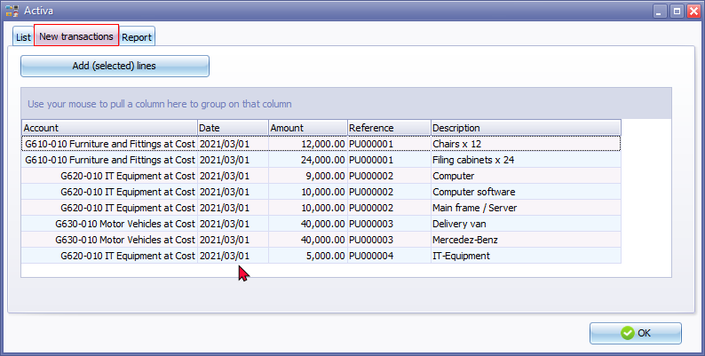
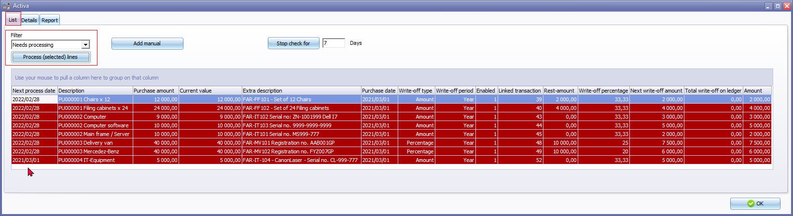
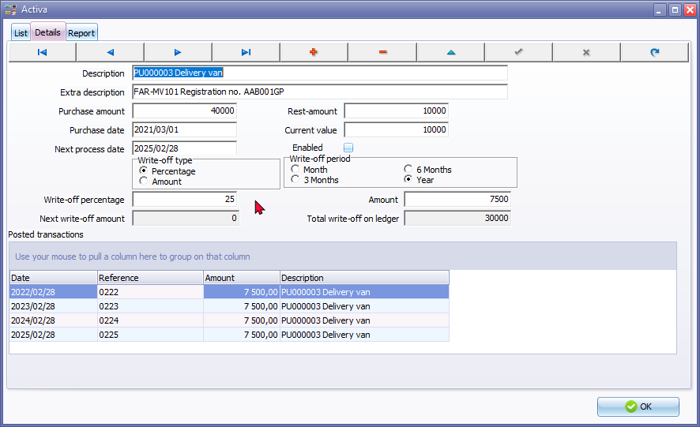

Add Fixed assets to the Activa plugin
New transactions tab
The New transactions tab within the Activa-plugin is designed to display new transactions associated with specific accounts, particularly fixed asset accounts. It's activated under two conditions:
- New Fixed Asset Accounts: If you add new fixed asset accounts to the Activa Setup Aciva tab, the New transactions tab will automatically appear. This ensures that you can immediately track any transactions related to these newly added assets.
- New Transactions in Existing Accounts: If any of your existing fixed asset accounts, receive new transactions, the New transactions tab will also become visible. This allows you to promptly review and process these incoming transactions.
Additional Features:
- Automatic Updates: The New transactions tab updates automatically as new transactions are recorded in the Set of Books. This means you don't have to manually launch the tab to see the latest information.
- Filtering Options: The tab may provide filtering options to help you narrow down the displayed transactions based on specific criteria, such as date range, accounts, amounts, reference and decription of the transaction.
- Transaction Details: Clicking on a transaction listed in the tab typically provides detailed information about that transaction, including its date, amount, description, and associated account.
Overall, the New transactions tab is a valuable tool for effectively managing and monitoring transactions related to fixed assets and other accounts within the Activa-plugin.

|
|
Context menu - Add consolidated: If you wish to consolidate (merge) more than one transaction to one (1) record, you may right-click and select the Add consolidated option. This will add the selected transactions as one (1) transaction on the Activa - List tab. This would normally be the case where a specific asset consists of more than one transaction (e.g. Purchase transaction of the asset and any other transactions, for example to install that asset and make it usable and operational). |

Once transactions in batches and documents is posted (updated) to the ledger, the transactions will be added to the Activa - New transactions tab.
You need to add these new transactions to the Activa - List tab by clicking on the Add (selected) lines button.
Activa - List tab
Once the Fixed assets is added from the the Activa - New transactions tab (Add (selected) lines button) add these new transactions is added to the Activa - List tab.
Add manual button - You may also Add manual transactions and set up and configure these transactions manually on the blank Activa - Details tab.
Stop check for 7 Days button - The default value is 7 days. The Fixed assets which need processing (on the "Next process date") will automatically launch after 7 days from that date. You may set the number of days according to your specific needs.
Before you start to process any Activa lines, you need to make absolutely sure that each of your Fixed assets is correctly set and configured. If any information is incorrect, or you need to change the information listed in the columns of the Activa - List tab, click on the Activa - Details tab of the selected Fixed asset.
Once you click on the on the Process (selected) lines button, this will process the Activa write-off transactions and automatically post (update) these transactions to the ledger.

Activa - Details tab
Once the new transactions is added to the Activa - List tab, you need to specify the settings and options for each fixed asset type on the Activa - Details tab. This is a once-off process for each fixed asset during the life span of the Fixed asset.

|
|
Tax Legislation, Companies Act and accounting standards in some countries may prescribe different methods to write off depreciation (wear and tear allowances) over the life span for the types of fixed assets. When you add Fixed assets, you need to decide the method on which depreciation is calculated for the assets. These values only needs to be set once for a Fixed asset on the Details tab of the Activa plugin. The depreciation will be written-off each period over the life span of the fixed asset. Some of these methods to calculate depreciation is:
In addition to these methods, items (assets purchased for less than a prescribed amount) may be written-off in full. |

The on the Activa - Details tab need to check and include the following for the fixed asset depreciation transactions:
- Description - The description of the transaction consists of the Purchase document number and item description.
- Extra description - Add additional text (up to 50 characters) for the fixed asset depreciation transactions.
- Purchase amount - The purchase amount (cost amount), excluding Tax (VAT/GST/Sales tax) of the fixed asset will automatically be displayed. Check the Purchase amount. If you have entered any opening balances, please make sure that you enter the correct value of the asset here.
|
|
If you wish to consolidate (merge) more than one transaction to one (1) record, you may right-click and select the Add consolidated option on the Activa - New transactions tab. This will add the selected transactions as one (1) transaction on the Activa - List tab. This would normally be the case where a specific asset consists of more than one transaction (e.g. Purchase transaction of the asset and any other transactions, for example to install that asset and make it usable and operational). |
- Purchase date - The date of the purchase transaction in batches or purchase documents.
- Next process date - This date will be automatically calculated as determined by the Write-off period (e.g Months, 3 Months, 6 Months or Year).
- Rest amount - The Rest amount, is by default zero "0". Enter the salvage value amount, scrap value, trade-in value) at the end of the fixed asset's life span (after all depreciation amounts is written-off) if applicable.
- Current value - The Current value is the Purchase amount minus any Rest value, if applicable to the Fixed asset. In subsequent periods (years as in this example) after depreciation transactions is processed, the value would reduce by the write-off transactions. Once the last depreciation transactions is processed at the end of the fixed assets life span, the current value should be the dame as the "Rest amount". If no "Rest amount" is specified, the current value would be zero.
- Enabled - By default all Fixed assets are active, if there is any write-off transactions. Once you have done the final write-off, the Fixed asset will be set to inactive.
|
|
Once the final depreciation or write-off amount is reached, the following confirmation message will be displayed: "Write off for Asset description ended do you want to clear the activa accounts?" If select Yes to you clear the Activa account, the "End of life" entry will be displayed. |
- Write-off type - Select Percentage or Amount.
- Percentage / Amount - Enter the percentage or the amount (depending on the selection in the "Write-off type" options).
- Write-off period - Select Month, 3 Months, 6 Months or Year.
- Next write-off amount -
Once finished, click on the Save record button to refresh the calculations and save your changes.
You may click on the Activa - List tab to select a another Fixed asset to configure the Fixed asset.
Once finished you may click on the OK button to exit the Activa screen.